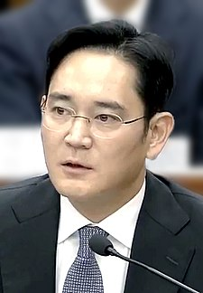

인물백과
- 이건희
- 이재용
- 이부진
이재용
이재용(李在鎔, 1968년 6월 23일 ~ )은 대한민국의 기업인이다. 삼성전자 회장 이건희의 아들로, 2012년부터 삼성전자 부회장이자 2017년에는 그룹을 대표하는 동일인이 되었다.

학력
- 1981년 경기초등학교 졸업
- 1984년 청운중학교 졸업
- 1987년 경복고등학교 졸업
- 1992년 서울대학교 동양사학 학사
- 게이오기주쿠 대학 대학원 경영학 석사
- 하버드대학교 경영대학원 경영학 박사 수료
경력
- 1991년 12월: 삼성전자 총무그룹 입사
- 1995년 삼성전자 전무(일본 유학)
- 2001년 3월~2003년 1월: 삼성전자 경영기획팀 상무보
- 2003년 1월~2007년 1월: 삼성전자 경영기획팀 상무
- 2004년 7월~2008년 4월: S-LCD 등기이사
- 2007년 1월~2008년 4월: 삼성전자 글로벌고객총괄책임자 전무
- 2008년 4월~2009년 12월: 삼성전자 전무
- 2009년 1월~2010년 12월: 삼성전자 최고운영책임자(COO) 부사장
- 2010년 12월~2012년 12월: 삼성전자 최고운영책임자(COO) 사장
- 2012년~2017년: 엑소르 사외이사
- 2012년 12월~ : 삼성전자 부회장
- 2015년 5월~2020년 8월: 삼성생명공익재단 이사장
- 2015년 5월~ : 삼성문화재단 이사장